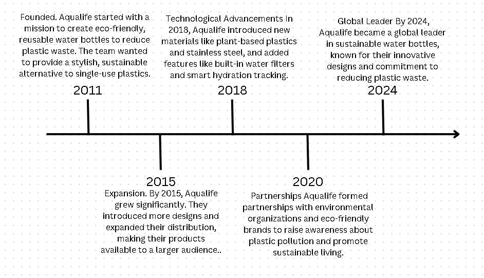

Aqualife was established with the mission to revolutionize the aquaculture industry through advanced fish care and vaccination services. This pioneering initiative aimed to improve the health and productivity of farmed fish, addressing the industry's significant challenges related to fish diseases and mortality rates. The founding team, comprised of experts in marine biology and biotechnology, set out to create innovative solutions that would benefit both fish farmers and the global food supply chain.
Building on its early successes, Aqualife underwent a significant expansion in 2015. The company increased its operational capacity and broadened its range of services to meet the growing demands of the aquaculture industry. This expansion included the establishment of new facilities, hiring additional staff, and extending its geographic reach to serve a larger client base. The company's commitment to excellence and innovation helped solidify its reputation as a leader in fish health management.
In 2018, Aqualife made significant strides in integrating cutting-edge technologies into its operations. The implementation of robotics and automation in fish health management allowed for more precise and efficient monitoring and treatment of fish. These technological advancements not only improved the accuracy of diagnostics but also enhanced the overall effectiveness of vaccination and care procedures. Aqualife's adoption of technology positioned it at the forefront of the industry, setting new standards for fish health management.
Recognizing the importance of collaboration, Aqualife formed strategic partnerships with key industry players in 2020. These partnerships aimed to enhance research and development efforts, leading to the creation of more advanced and effective fish care solutions. By working closely with other experts and organizations in the field, Aqualife was able to leverage shared knowledge and resources to drive innovation and improve outcomes for fish farmers worldwide.
By 2024, Aqualife had established itself as a global leader in the sustainable hydration market. The company continued to innovate, introducing new designs and features that catered to the evolving needs of their customers. Aqualife's commitment to sustainability, combined with their high-quality products and strong brand identity, made them a trusted choice for environmentally conscious consumers around the world. Their ongoing efforts to promote reusable water bottles and reduce plastic waste contributed significantly to the global movement towards a more sustainable future.